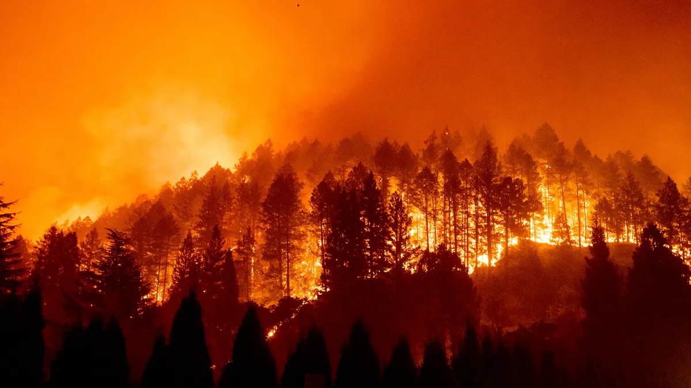

The Bobcat Fire was a significant wildfire that occurred in Los Angeles County, California, in September 2020, and it caused extensive damage.
Ignition and Duration: The fire started on September 6, 2020, near Cogswell Dam in the San Gabriel Mountains. It burned for several weeks and was finally fully contained on November 27, 2020.
Area Affected: The fire consumed 115,997 acres (46,942 hectares). It mainly burned in the central San Gabriel Mountains and spread through areas in and around the Angeles National Forest.
Scale and Significance: The Bobcat Fire is one of the largest fires ever recorded in Los Angeles County, and its spread across more than 180 square miles (460 square kilometers) of the San Gabriel Mountains highlights its magnitude.
Environmental Conditions: The Bobcat Fire grew rapidly and was severe due to sweltering and dry conditions, which are typical factors that exacerbate wildfires in California.
This fire exemplifies the challenges of large-scale wildfires in areas with dense vegetation and challenging terrain, exacerbated by climatic conditions conducive to fire spread. The impact of the Bobcat Fire on the San Gabriel Mountains and surrounding areas underscores the importance of fire management and prevention strategies in such vulnerable regions.